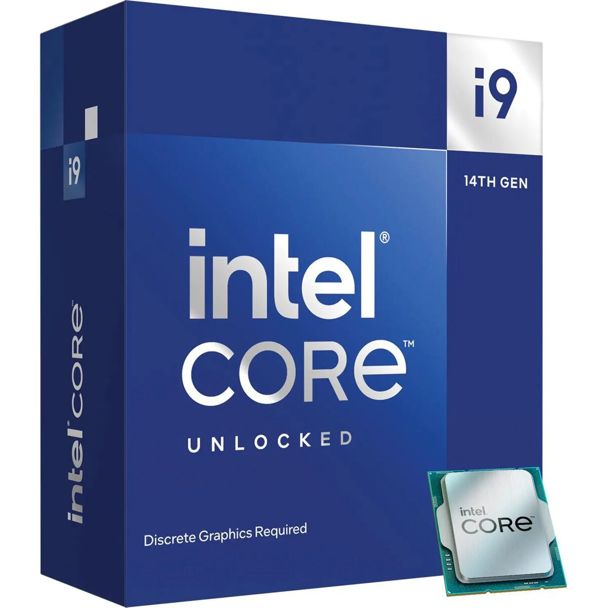
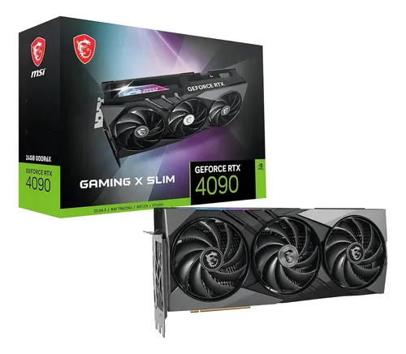
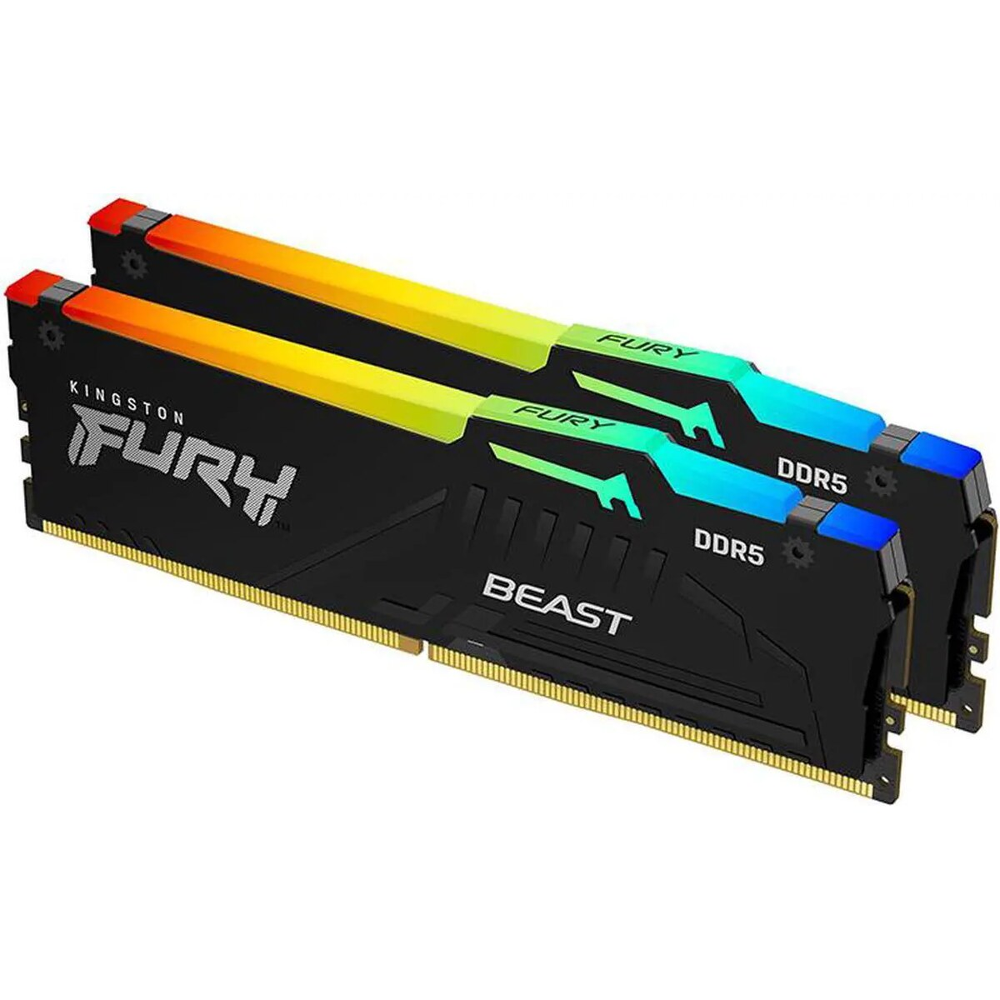
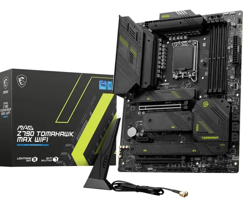
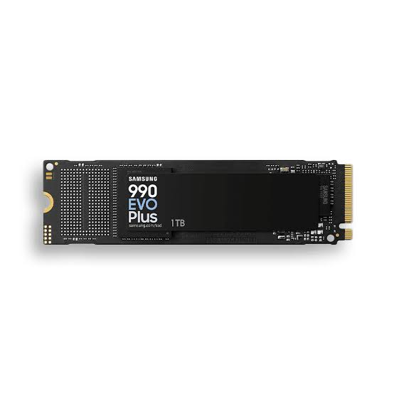

El hardware es la parte física de un sistema informático, que incluye componentes como el procesador, la memoria, el disco duro y otros dispositivos de entrada y salida. aqui describiremos los componentes de hardware más importantes y sus funciones dentro de un sistema informático.
El procesador es el cerebro del sistema informático, encargado de ejecutar instrucciones y realizar cálculos.

La tarjeta gráfica es responsable de procesar y renderizar imágenes y videos, mejorando la calidad visual de los gráficos en pantalla.

La memoria RAM es un tipo de memoria volátil que almacena temporalmente datos e instrucciones mientras el sistema está en funcionamiento, permitiendo un acceso rápido a la información.

La tarjeta madre es el componente principal que conecta todos los componentes del sistema informático.

El SSD es un dispositivo de almacenamiento que permite guardar información y acceder a ella rápidamente.
